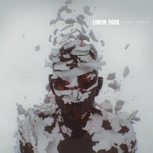
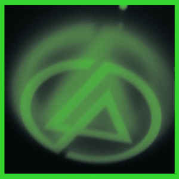

From Zero
2024

One More Light
2017

Living Things
2012

Meteora
2003

A Thousand Suns
2010

Minutes to Midnight
2007

Hybrid Theory
2000

Papercuts
2024
Linkin Park
Linkin Park foi uma das bandas mais influentes do rock dos anos 2000, conhecida por misturar rock, rap e música eletrônica em um estilo único. Formada na Califórnia em 1996, a banda conquistou uma geração com letras emocionais e sonoridade intensa.
O grupo ganhou destaque mundial com o álbum "Hybrid Theory", que se tornou um dos discos de estreia mais vendidos da história do rock moderno.
Ascensão
A combinação entre os vocais melódicos de Chester Bennington e os versos de rap de Mike Shinoda criou a identidade marcante da banda.
Suas músicas abordavam temas como ansiedade, solidão, raiva, pressão emocional e conflitos internos, criando uma forte conexão com o público.
Álbuns como "Meteora" e "Minutes to Midnight" consolidaram o Linkin Park como uma das maiores bandas do século XXI.
Impacto
Linkin Park ajudou a popularizar o nu metal e influenciou diversas bandas ao redor do mundo com sua mistura de estilos e produção moderna.
Entre seus maiores sucessos estão "Numb", "In the End", "Somewhere I Belong" e "Faint".
Mesmo após a morte de Chester Bennington em 2017, a banda continua sendo lembrada como uma das maiores e mais importantes da história do rock moderno.